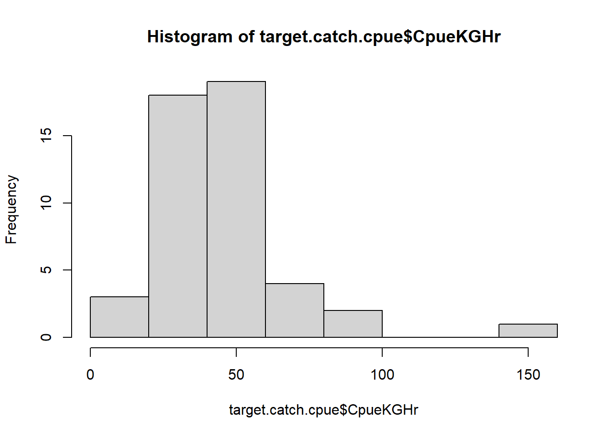
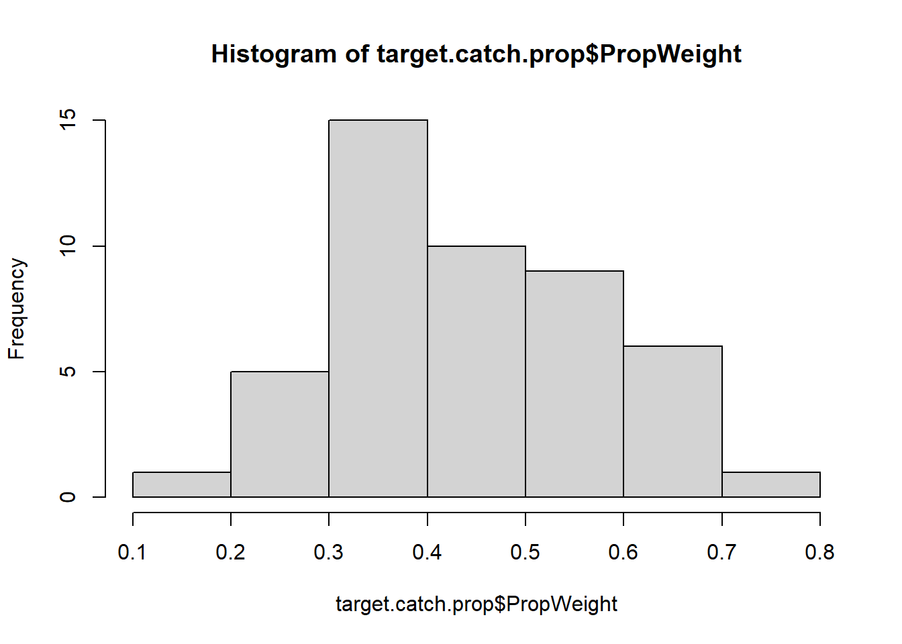

6 Seabob Models - Best Models
6.1 CPUE
6.1.1 Data modifications
target.catch.cpue <- SummaryTable %>%
ungroup() %>%
# mutate(Company.bv = case_when(Company == "PSI" ~ 1,
# Company == "NHS" ~ 0),
# TimePeriods.bv = case_when(TimePeriods == "Day" ~ 1,
# TimePeriods == "Night" ~ 0)) %>%
filter(CatchCategory == "Target catch") %>%
dplyr::select(Company,
Month,
TimePeriods,
FishingZones,
FishingDepthMtr,
CpueKGHr)
# Converting variables to factors
factor.var <- c("Company",
"Month",
"TimePeriods",
"FishingZones")
target.catch.cpue[,factor.var] <- lapply(target.catch.cpue[,factor.var], factor)
# Removing fishing zones 2 and 5
drop.zones <- c(2, 5)
target.catch.cpue.2 <- target.catch.cpue %>%
filter(!FishingZones %in% drop.zones)6.1.2 Qucik glance at response variable
10.71 17.11 18.99 23.14 27.27 27.92 27.94 27.95 29.39 30.91 31.82
1 1 1 1 2 1 1 1 1 1 1
33.94 34.21 35.55 36.23 36.36 37.01 38.08 38.64 40.91 42.78 44.01
2 1 1 1 1 1 1 1 1 1 1
45.45 46.03 46.38 47.12 48.3 48.48 48.49 48.7 48.86 50.91 51.65
1 1 1 1 1 1 1 2 1 1 1
52.61 52.7 55.68 55.94 62.34 63.64 87.5 100 145.46
1 1 1 1 1 3 1 1 1
6.1.2.1 2 Predictors
cpue.model.1 <- glm(CpueKGHr ~ Month +
TimePeriods,
family = gaussian(link = "log"),
data = target.catch.cpue)
# Print summary
summary(cpue.model.1)
Call:
glm(formula = CpueKGHr ~ Month + TimePeriods, family = gaussian(link = "log"),
data = target.catch.cpue)
Deviance Residuals:
Min 1Q Median 3Q Max
-57.107 -10.299 -2.643 6.706 75.483
Coefficients:
Estimate Std. Error t value Pr(>|t|)
(Intercept) 3.78783 0.15327 24.714 <2e-16 ***
Month3 -0.36739 0.31698 -1.159 0.2535
Month4 0.21827 0.21108 1.034 0.3075
Month6 0.46034 0.18685 2.464 0.0183 *
Month8 -0.09525 0.27511 -0.346 0.7310
Month9 -0.02067 0.24484 -0.084 0.9332
Month10 -0.08477 0.25590 -0.331 0.7422
TimePeriodsNight -0.03136 0.13151 -0.238 0.8128
---
Signif. codes: 0 '***' 0.001 '**' 0.01 '*' 0.05 '.' 0.1 ' ' 1
(Dispersion parameter for gaussian family taken to be 440.9708)
Null deviance: 22777 on 46 degrees of freedom
Residual deviance: 17198 on 39 degrees of freedom
AIC: 428.79
Number of Fisher Scoring iterations: 76.1.2.2 2 Predictors with 1 interaction term
cpue.model.2 <- glm(CpueKGHr ~ Month +
TimePeriods +
Month*TimePeriods,
family = gaussian(link = "log"),
data = target.catch.cpue)
# Print summary
summary(cpue.model.2)
Call:
glm(formula = CpueKGHr ~ Month + TimePeriods + Month * TimePeriods,
family = gaussian(link = "log"), data = target.catch.cpue)
Deviance Residuals:
Min 1Q Median 3Q Max
-40.587 -8.933 -0.867 8.842 59.473
Coefficients:
Estimate Std. Error t value Pr(>|t|)
(Intercept) 3.77754 0.19347 19.525 < 2e-16 ***
Month3 -0.25521 0.40268 -0.634 0.53060
Month4 -0.05201 0.34713 -0.150 0.88182
Month6 0.67665 0.23827 2.840 0.00767 **
Month8 -0.14320 0.37030 -0.387 0.70144
Month9 -0.13235 0.36740 -0.360 0.72097
Month10 -0.16105 0.37516 -0.429 0.67050
TimePeriodsNight -0.01023 0.27502 -0.037 0.97054
Month3:TimePeriodsNight -0.24431 0.63864 -0.383 0.70451
Month4:TimePeriodsNight 0.49093 0.43643 1.125 0.26875
Month6:TimePeriodsNight -0.50633 0.38643 -1.310 0.19915
Month8:TimePeriodsNight 0.12364 0.54269 0.228 0.82119
Month9:TimePeriodsNight 0.21618 0.48765 0.443 0.66043
Month10:TimePeriodsNight 0.15005 0.50701 0.296 0.76912
---
Signif. codes: 0 '***' 0.001 '**' 0.01 '*' 0.05 '.' 0.1 ' ' 1
(Dispersion parameter for gaussian family taken to be 429.0573)
Null deviance: 22777 on 46 degrees of freedom
Residual deviance: 14159 on 33 degrees of freedom
AIC: 431.65
Number of Fisher Scoring iterations: 56.1.2.3 3 Predictors
cpue.model.3 <- glm(CpueKGHr ~ TimePeriods +
FishingDepthMtr +
FishingZones,
family = gaussian(link = "log"),
data = target.catch.cpue.2)
# Print summary
summary(cpue.model.3)
Call:
glm(formula = CpueKGHr ~ TimePeriods + FishingDepthMtr + FishingZones,
family = gaussian(link = "log"), data = target.catch.cpue.2)
Deviance Residuals:
Min 1Q Median 3Q Max
-55.442 -10.229 -1.557 9.374 71.651
Coefficients:
Estimate Std. Error t value Pr(>|t|)
(Intercept) 3.82660 0.61119 6.261 2.25e-07 ***
TimePeriodsNight -0.10953 0.12675 -0.864 0.3928
FishingDepthMtr -0.01883 0.02926 -0.644 0.5236
FishingZones6 0.20751 0.33179 0.625 0.5353
FishingZones7 0.38181 0.33780 1.130 0.2653
FishingZones8 0.77618 0.30640 2.533 0.0154 *
---
Signif. codes: 0 '***' 0.001 '**' 0.01 '*' 0.05 '.' 0.1 ' ' 1
(Dispersion parameter for gaussian family taken to be 400.4755)
Null deviance: 21940 on 44 degrees of freedom
Residual deviance: 15618 on 39 degrees of freedom
AIC: 404.93
Number of Fisher Scoring iterations: 76.1.2.4 3 Predictors and 1 interaction term
cpue.model.4 <- glm(CpueKGHr ~ FishingDepthMtr +
FishingZones +
TimePeriods +
TimePeriods*FishingZones, # Yields a low AIC
family = gaussian(link = "log"),
data = target.catch.cpue.2)
# Print summary
summary(cpue.model.4)
Call:
glm(formula = CpueKGHr ~ FishingDepthMtr + FishingZones + TimePeriods +
TimePeriods * FishingZones, family = gaussian(link = "log"),
data = target.catch.cpue.2)
Deviance Residuals:
Min 1Q Median 3Q Max
-49.847 -9.576 -2.180 7.554 65.825
Coefficients:
Estimate Std. Error t value Pr(>|t|)
(Intercept) 3.84289 0.66889 5.745 1.52e-06 ***
FishingDepthMtr -0.01315 0.03018 -0.436 0.6656
FishingZones6 0.02280 0.43391 0.053 0.9584
FishingZones7 0.20420 0.45015 0.454 0.6528
FishingZones8 0.74497 0.41171 1.809 0.0787 .
TimePeriodsNight -0.33838 0.59333 -0.570 0.5720
FishingZones6:TimePeriodsNight 0.41677 0.63002 0.662 0.5125
FishingZones7:TimePeriodsNight 0.36594 0.68157 0.537 0.5946
FishingZones8:TimePeriodsNight 0.06452 0.62364 0.103 0.9182
---
Signif. codes: 0 '***' 0.001 '**' 0.01 '*' 0.05 '.' 0.1 ' ' 1
(Dispersion parameter for gaussian family taken to be 413.0306)
Null deviance: 21940 on 44 degrees of freedom
Residual deviance: 14869 on 36 degrees of freedom
AIC: 408.72
Number of Fisher Scoring iterations: 66.1.2.5 3 Predictors with 2 interaction term
cpue.model.5 <- glm(CpueKGHr ~ Month +
TimePeriods +
FishingDepthMtr +
Month*TimePeriods +
FishingDepthMtr*TimePeriods,
# FishingDepthMtr*Month, Gives some NA values
family = gaussian(link = "log"),
data = target.catch.cpue)
# Print summary
summary(cpue.model.5)
Call:
glm(formula = CpueKGHr ~ Month + TimePeriods + FishingDepthMtr +
Month * TimePeriods + FishingDepthMtr * TimePeriods, family = gaussian(link = "log"),
data = target.catch.cpue)
Deviance Residuals:
Min 1Q Median 3Q Max
-38.714 -7.986 0.073 6.503 36.577
Coefficients:
Estimate Std. Error t value Pr(>|t|)
(Intercept) 6.01648 0.89849 6.696 1.72e-07 ***
Month3 -0.28586 0.38092 -0.750 0.45864
Month4 -0.08057 0.33130 -0.243 0.80946
Month6 0.67667 0.22997 2.942 0.00612 **
Month8 -0.62090 0.39923 -1.555 0.13004
Month9 -0.77642 0.42916 -1.809 0.08013 .
Month10 -0.92405 0.49864 -1.853 0.07340 .
TimePeriodsNight -3.00644 1.26506 -2.377 0.02384 *
FishingDepthMtr -0.12268 0.04825 -2.542 0.01622 *
Month3:TimePeriodsNight -0.22194 0.59815 -0.371 0.71313
Month4:TimePeriodsNight 0.45480 0.41657 1.092 0.28335
Month6:TimePeriodsNight -0.46677 0.36299 -1.286 0.20800
Month8:TimePeriodsNight 0.76892 0.57569 1.336 0.19139
Month9:TimePeriodsNight 1.06462 0.57738 1.844 0.07478 .
Month10:TimePeriodsNight 1.19768 0.66491 1.801 0.08140 .
TimePeriodsNight:FishingDepthMtr 0.16521 0.06817 2.424 0.02140 *
---
Signif. codes: 0 '***' 0.001 '**' 0.01 '*' 0.05 '.' 0.1 ' ' 1
(Dispersion parameter for gaussian family taken to be 372.5629)
Null deviance: 22777 on 46 degrees of freedom
Residual deviance: 11549 on 31 degrees of freedom
AIC: 426.08
Number of Fisher Scoring iterations: 96.1.2.6 3 Predictors with 1 interaction term - Dropping Month*TimePeriods
cpue.model.5 <- glm(CpueKGHr ~ Month +
TimePeriods +
FishingDepthMtr +
# Month*TimePeriods +
FishingDepthMtr*TimePeriods,
# FishingDepthMtr*Month, Gives some NA values
family = gaussian(link = "log"),
data = target.catch.cpue)
# Print summary
summary(cpue.model.5)
Call:
glm(formula = CpueKGHr ~ Month + TimePeriods + FishingDepthMtr +
FishingDepthMtr * TimePeriods, family = gaussian(link = "log"),
data = target.catch.cpue)
Deviance Residuals:
Min 1Q Median 3Q Max
-58.775 -9.469 -2.061 7.457 69.838
Coefficients:
Estimate Std. Error t value Pr(>|t|)
(Intercept) 4.48519 0.77940 5.755 1.35e-06 ***
Month3 -0.38454 0.32222 -1.193 0.2403
Month4 0.21917 0.21378 1.025 0.3119
Month6 0.45733 0.19164 2.386 0.0222 *
Month8 -0.20023 0.32432 -0.617 0.5408
Month9 -0.15522 0.32508 -0.477 0.6358
Month10 -0.21548 0.36183 -0.596 0.5551
TimePeriodsNight -0.70968 0.77137 -0.920 0.3635
FishingDepthMtr -0.03855 0.04167 -0.925 0.3609
TimePeriodsNight:FishingDepthMtr 0.03906 0.04553 0.858 0.3964
---
Signif. codes: 0 '***' 0.001 '**' 0.01 '*' 0.05 '.' 0.1 ' ' 1
(Dispersion parameter for gaussian family taken to be 451.9202)
Null deviance: 22777 on 46 degrees of freedom
Residual deviance: 16721 on 37 degrees of freedom
AIC: 431.47
Number of Fisher Scoring iterations: 86.1.3 Model Comparison
$Models
Formula
1 "CpueKGHr ~ Month + TimePeriods"
2 "CpueKGHr ~ Month + TimePeriods + Month * TimePeriods"
3 "CpueKGHr ~ TimePeriods + FishingDepthMtr + FishingZones"
4 "CpueKGHr ~ FishingDepthMtr + FishingZones + TimePeriods + TimePeriods * FishingZones"
5 "CpueKGHr ~ Month + TimePeriods + FishingDepthMtr + FishingDepthMtr * TimePeriods"
$Fit.criteria
Rank Df.res AIC AICc BIC McFadden Cox.and.Snell Nagelkerke p.value
1 8 39 428.8 433.7 445.4 0.03115 0.2449 0.2450 0
2 14 33 431.7 447.1 459.4 0.05270 0.3784 0.3784 0
3 6 39 404.9 408.0 417.6 0.03765 0.2881 0.2882 0
4 9 36 408.7 415.2 426.8 0.04310 0.3223 0.3223 0
5 10 37 431.5 439.0 451.8 0.03426 0.2659 0.2659 06.2 Weight prop.
6.2.1 Data modifications
target.catch.prop <- SummaryTable %>%
ungroup() %>%
filter(CatchCategory == "Target catch") %>%
dplyr::select(Company,
FishingDepthMtr,
FishingZones,
Month,
TimePeriods,
PropWeight)
# Converting variables to factors
factor.var <- c("Company",
"Month",
"TimePeriods",
"FishingZones")
target.catch.prop[,factor.var] <- lapply(target.catch.prop[,factor.var], factor)
# Removing fishing zones 2 and 5
drop.zones <- c(2, 5)
target.catch.prop.2 <- target.catch.prop %>%
filter(!FishingZones %in% drop.zones)6.2.2 Qucik glance at response variable
0.19 0.22 0.23 0.27 0.3 0.31 0.32 0.33 0.34 0.35 0.36 0.37 0.38 0.39 0.4 0.41
1 2 1 1 1 1 3 1 1 1 3 1 1 1 2 4
0.43 0.44 0.45 0.46 0.49 0.53 0.55 0.57 0.59 0.6 0.61 0.62 0.63 0.64 0.66 0.67
1 2 1 1 1 2 2 1 1 3 1 1 1 1 1 1
0.72
1
6.2.2.1 2 Predictors
prop.model.1 <- glm(PropWeight ~ Month +
TimePeriods,
family = gaussian,
data = target.catch.prop)
# Print summary
summary(prop.model.1)
Call:
glm(formula = PropWeight ~ Month + TimePeriods, family = gaussian,
data = target.catch.prop)
Deviance Residuals:
Min 1Q Median 3Q Max
-0.209060 -0.083440 0.004274 0.080833 0.167607
Coefficients:
Estimate Std. Error t value Pr(>|t|)
(Intercept) 0.48761 0.03625 13.450 3.14e-16 ***
Month3 -0.14333 0.05602 -2.559 0.014506 *
Month4 -0.04667 0.05602 -0.833 0.409903
Month6 0.03000 0.05602 0.536 0.595334
Month8 -0.02419 0.05973 -0.405 0.687715
Month9 -0.20833 0.05602 -3.719 0.000628 ***
Month10 -0.16833 0.05602 -3.005 0.004627 **
TimePeriodsNight 0.05145 0.03276 1.571 0.124305
---
Signif. codes: 0 '***' 0.001 '**' 0.01 '*' 0.05 '.' 0.1 ' ' 1
(Dispersion parameter for gaussian family taken to be 0.0125533)
Null deviance: 0.85586 on 46 degrees of freedom
Residual deviance: 0.48958 on 39 degrees of freedom
AIC: -63.145
Number of Fisher Scoring iterations: 26.2.2.2 2 Predictors with 1 interaction term
prop.model.2 <- glm(PropWeight ~ Month +
TimePeriods +
Month*TimePeriods,
family = gaussian,
data = target.catch.prop)
# Print summary
summary(prop.model.2)
Call:
glm(formula = PropWeight ~ Month + TimePeriods + Month * TimePeriods,
family = gaussian, data = target.catch.prop)
Deviance Residuals:
Min 1Q Median 3Q Max
-0.188333 -0.082500 0.006667 0.077500 0.183333
Coefficients:
Estimate Std. Error t value Pr(>|t|)
(Intercept) 0.50833 0.04585 11.086 1.15e-12 ***
Month3 -0.18500 0.07942 -2.329 0.0261 *
Month4 -0.05167 0.07942 -0.651 0.5198
Month6 0.04167 0.07942 0.525 0.6033
Month8 -0.13167 0.07942 -1.658 0.1068
Month9 -0.21500 0.07942 -2.707 0.0107 *
Month10 -0.18500 0.07942 -2.329 0.0261 *
TimePeriodsNight 0.01000 0.06484 0.154 0.8784
Month3:TimePeriodsNight 0.08333 0.11231 0.742 0.4634
Month4:TimePeriodsNight 0.01000 0.11231 0.089 0.9296
Month6:TimePeriodsNight -0.02333 0.11231 -0.208 0.8367
Month8:TimePeriodsNight 0.25833 0.12131 2.129 0.0408 *
Month9:TimePeriodsNight 0.01333 0.11231 0.119 0.9062
Month10:TimePeriodsNight 0.03333 0.11231 0.297 0.7685
---
Signif. codes: 0 '***' 0.001 '**' 0.01 '*' 0.05 '.' 0.1 ' ' 1
(Dispersion parameter for gaussian family taken to be 0.01261465)
Null deviance: 0.85586 on 46 degrees of freedom
Residual deviance: 0.41628 on 33 degrees of freedom
AIC: -58.767
Number of Fisher Scoring iterations: 26.2.2.3 3 Predictors
prop.model.3 <- glm(PropWeight ~ Month +
TimePeriods +
FishingDepthMtr,
family = gaussian,
data = target.catch.prop)
# Print summary
summary(prop.model.3)
Call:
glm(formula = PropWeight ~ Month + TimePeriods + FishingDepthMtr,
family = gaussian, data = target.catch.prop)
Deviance Residuals:
Min 1Q Median 3Q Max
-0.226197 -0.073285 0.008978 0.086465 0.171257
Coefficients:
Estimate Std. Error t value Pr(>|t|)
(Intercept) 0.736938 0.178907 4.119 0.000198 ***
Month3 -0.152070 0.055640 -2.733 0.009471 **
Month4 -0.046667 0.055300 -0.844 0.404017
Month6 0.016895 0.056062 0.301 0.764782
Month8 -0.083664 0.072282 -1.157 0.254306
Month9 -0.282595 0.076052 -3.716 0.000650 ***
Month10 -0.255700 0.082649 -3.094 0.003696 **
TimePeriodsNight 0.042044 0.033004 1.274 0.210429
FishingDepthMtr -0.013105 0.009213 -1.422 0.163072
---
Signif. codes: 0 '***' 0.001 '**' 0.01 '*' 0.05 '.' 0.1 ' ' 1
(Dispersion parameter for gaussian family taken to be 0.01223238)
Null deviance: 0.85586 on 46 degrees of freedom
Residual deviance: 0.46483 on 38 degrees of freedom
AIC: -63.583
Number of Fisher Scoring iterations: 26.2.2.4 3 Predictors
prop.model.4 <- glm(PropWeight ~ Month +
FishingDepthMtr +
FishingZones,
# TimePeriods, Adding time of day does not influence significance.
# Adding Months results in NA values
family = gaussian,
data = target.catch.prop.2)
# Print summary
summary(prop.model.4)
Call:
glm(formula = PropWeight ~ Month + FishingDepthMtr + FishingZones,
family = gaussian, data = target.catch.prop.2)
Deviance Residuals:
Min 1Q Median 3Q Max
-0.20696 -0.08261 0.00400 0.08261 0.19304
Coefficients: (1 not defined because of singularities)
Estimate Std. Error t value Pr(>|t|)
(Intercept) 0.737687 0.213908 3.449 0.001485 **
Month3 -0.211167 0.120125 -1.758 0.087510 .
Month4 -0.071667 0.092817 -0.772 0.445220
Month6 -0.038769 0.118368 -0.328 0.745219
Month8 -0.113594 0.075933 -1.496 0.143621
Month9 -0.302162 0.081875 -3.691 0.000756 ***
Month10 -0.271969 0.085350 -3.187 0.003026 **
FishingDepthMtr -0.008807 0.010231 -0.861 0.395193
FishingZones6 -0.015038 0.118515 -0.127 0.899758
FishingZones7 -0.104887 0.100551 -1.043 0.304045
FishingZones8 NA NA NA NA
---
Signif. codes: 0 '***' 0.001 '**' 0.01 '*' 0.05 '.' 0.1 ' ' 1
(Dispersion parameter for gaussian family taken to be 0.01292245)
Null deviance: 0.83106 on 44 degrees of freedom
Residual deviance: 0.45229 on 35 degrees of freedom
AIC: -57.3
Number of Fisher Scoring iterations: 26.2.2.5 3 Predictors and 1 interaction term
prop.model.5 <- glm(PropWeight ~ TimePeriods +
Month +
FishingDepthMtr + # Increase significance values
TimePeriods*Month,
family = gaussian,
data = target.catch.prop)
# Print summary
summary(prop.model.5)
Call:
glm(formula = PropWeight ~ TimePeriods + Month + FishingDepthMtr +
TimePeriods * Month, family = gaussian, data = target.catch.prop)
Deviance Residuals:
Min 1Q Median 3Q Max
-0.19654 -0.07737 0.01167 0.06840 0.19327
Coefficients:
Estimate Std. Error t value Pr(>|t|)
(Intercept) 0.796465 0.186143 4.279 0.000159 ***
TimePeriodsNight -0.009871 0.064593 -0.153 0.879499
Month3 -0.204871 0.078618 -2.606 0.013793 *
Month4 -0.061602 0.077874 -0.791 0.434737
Month6 0.021795 0.078618 0.277 0.783384
Month8 -0.206184 0.090602 -2.276 0.029698 *
Month9 -0.309388 0.097613 -3.170 0.003353 **
Month10 -0.279388 0.097613 -2.862 0.007359 **
FishingDepthMtr -0.014903 0.009345 -1.595 0.120582
TimePeriodsNight:Month3 0.103205 0.110482 0.934 0.357232
TimePeriodsNight:Month4 0.029871 0.110482 0.270 0.788611
TimePeriodsNight:Month6 -0.013398 0.109954 -0.122 0.903781
TimePeriodsNight:Month8 0.273237 0.118940 2.297 0.028294 *
TimePeriodsNight:Month9 0.033205 0.110482 0.301 0.765707
TimePeriodsNight:Month10 0.023398 0.109954 0.213 0.832836
---
Signif. codes: 0 '***' 0.001 '**' 0.01 '*' 0.05 '.' 0.1 ' ' 1
(Dispersion parameter for gaussian family taken to be 0.012051)
Null deviance: 0.85586 on 46 degrees of freedom
Residual deviance: 0.38563 on 32 degrees of freedom
AIC: -60.362
Number of Fisher Scoring iterations: 26.2.2.6 3 Predictors with 2 interaction term
prop.model.6 <- glm(PropWeight ~ Month +
TimePeriods +
FishingDepthMtr +
Month*TimePeriods +
FishingDepthMtr*TimePeriods, # Adding fishing zones yields NA values
family = gaussian,
data = target.catch.prop)
# Print summary
summary(prop.model.6)
Call:
glm(formula = PropWeight ~ Month + TimePeriods + FishingDepthMtr +
Month * TimePeriods + FishingDepthMtr * TimePeriods, family = gaussian,
data = target.catch.prop)
Deviance Residuals:
Min 1Q Median 3Q Max
-0.185100 -0.081452 0.006667 0.068825 0.187550
Coefficients:
Estimate Std. Error t value Pr(>|t|)
(Intercept) 9.075e-01 2.394e-01 3.791 0.00065 ***
Month3 -2.125e-01 7.983e-02 -2.662 0.01219 *
Month4 -6.543e-02 7.859e-02 -0.833 0.41145
Month6 1.414e-02 7.983e-02 0.177 0.86057
Month8 -2.349e-01 9.903e-02 -2.372 0.02408 *
Month9 -3.458e-01 1.097e-01 -3.151 0.00359 **
Month10 -3.158e-01 1.097e-01 -2.878 0.00719 **
TimePeriodsNight -2.753e-01 3.618e-01 -0.761 0.45246
FishingDepthMtr -2.065e-02 1.216e-02 -1.698 0.09952 .
Month3:TimePeriodsNight 1.109e-01 1.117e-01 0.992 0.32877
Month4:TimePeriodsNight 2.798e-02 1.113e-01 0.251 0.80314
Month6:TimePeriodsNight -2.332e-05 1.122e-01 0.000 0.99984
Month8:TimePeriodsNight 3.363e-01 1.466e-01 2.294 0.02873 *
Month9:TimePeriodsNight 1.125e-01 1.539e-01 0.731 0.47030
Month10:TimePeriodsNight 1.198e-01 1.702e-01 0.704 0.48676
TimePeriodsNight:FishingDepthMtr 1.432e-02 1.920e-02 0.746 0.46142
---
Signif. codes: 0 '***' 0.001 '**' 0.01 '*' 0.05 '.' 0.1 ' ' 1
(Dispersion parameter for gaussian family taken to be 0.01222049)
Null deviance: 0.85586 on 46 degrees of freedom
Residual deviance: 0.37884 on 31 degrees of freedom
AIC: -59.197
Number of Fisher Scoring iterations: 26.2.3 Model Comparison
rcompanion::compareGLM(prop.model.1,
prop.model.2,
prop.model.3,
prop.model.4,
prop.model.5,
prop.model.6) $Models
Formula
1 "PropWeight ~ Month + TimePeriods"
2 "PropWeight ~ Month + TimePeriods + Month * TimePeriods"
3 "PropWeight ~ Month + TimePeriods + FishingDepthMtr"
4 "PropWeight ~ Month + FishingDepthMtr + FishingZones"
5 "PropWeight ~ TimePeriods + Month + FishingDepthMtr + TimePeriods * Month"
6 "PropWeight ~ Month + TimePeriods + FishingDepthMtr + Month * TimePeriods + FishingDepthMtr * TimePeriods"
$Fit.criteria
Rank Df.res AIC AICc BIC McFadden Cox.and.Snell Nagelkerke p.value
1 8 39 -63.14 -58.28 -46.49 -0.4783 0.4280 -0.1932 1.798e-03
2 14 33 -58.77 -43.28 -31.01 -0.6171 0.5136 -0.2318 3.352e-07
3 9 38 -63.58 -57.47 -45.08 -0.5227 0.4569 -0.2062 5.122e-04
4 10 35 -55.30 -45.55 -33.62 -0.5273 0.4558 -0.2100 1.051e-04
5 15 32 -60.36 -42.23 -30.76 -0.6826 0.5494 -0.2480 9.273e-08
6 16 31 -59.20 -38.09 -27.74 -0.6978 0.5574 -0.2516 1.893e-08